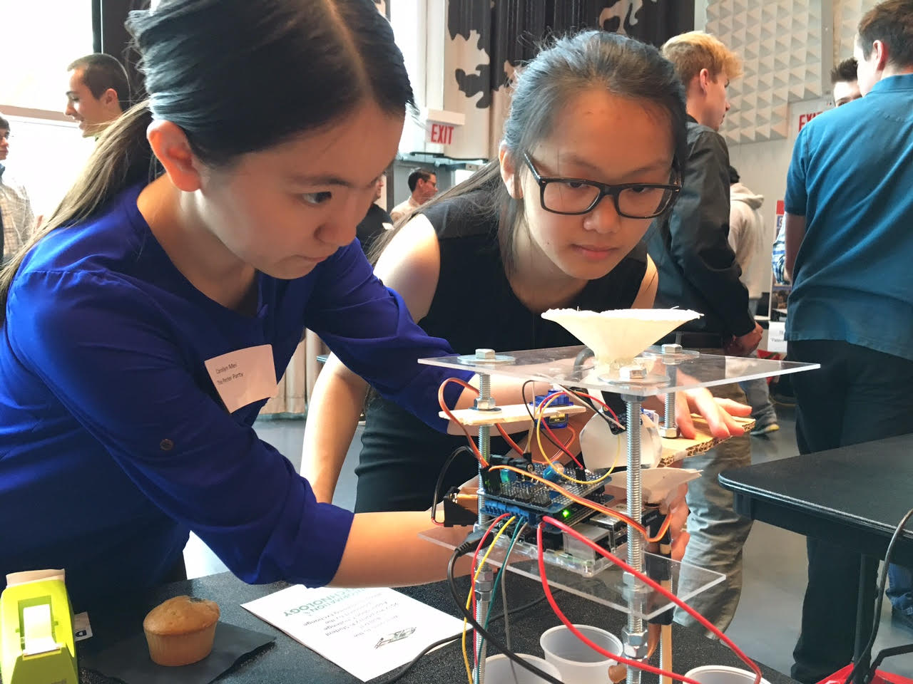

Perler Bead Sorter Raspberry Pi Application
Entry in IL Raspberry Pi Student Challenge 2017
Tired of sorting perler beads by hand to look for the right one? Us too! Inspired by an M&M sorter, we tried to build a raspberry pi application using servo motors and 3d-printed parts to sort perler beads by color.
Collaboration with WY Girls Who Code Club members Carolyn Mei and Kerlina Liu
